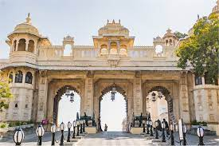
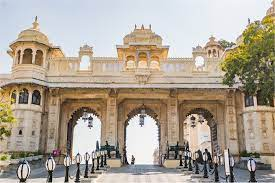

Udaipur
City Palace

 

1. Location: The City Palace is located on the east bank of Lake Pichola in Udaipur, Rajasthan, India. It is situated in the heart of the city and is easily accessible from various parts of Udaipur.
2. Architecture: The City Palace complex is a fusion of Rajasthani and Mughal architectural styles. It was built over several centuries, with contributions from different rulers of the Mewar dynasty. The palace features intricately carved balconies, ornate arches, and exquisite marble work.
3. History: Construction of the City Palace began in 1553, under the reign of Maharana Udai Singh II, the founder of Udaipur. Over the centuries, successive rulers added new structures and embellishments to the palace, making it one of the most impressive royal residences in Rajasthan.
4. Attractions: Within the City Palace complex, visitors can explore several palaces, including the Mardana Mahal, Manak Mahal, and Zenana Mahal. The palace also houses museums showcasing artifacts, paintings, and royal memorabilia, providing insight into the history and lifestyle of the Mewar dynasty.
5. Lake Views: One of the highlights of visiting the City Palace is the panoramic view of Lake Pichola and the surrounding hills. Visitors can enjoy breathtaking vistas from the palace balconies and terraces, especially during sunrise and sunset.
6. Cultural Significance: The City Palace is not just a historic landmark but also a living heritage site that reflects the rich cultural legacy of Udaipur. It serves as a venue for cultural events, festivals, and royal ceremonies, preserving the traditions of the region.
7. Accessibility: The City Palace is open to visitors throughout the year and offers guided tours for tourists. Entry tickets are available at the palace entrance, with additional fees for camera and video permits.
Overall: A visit to the City Palace is a journey through the history and heritage of Udaipur, showcasing the grandeur and splendor of Rajasthan's royal past. It is a must-visit destination for anyone exploring the city's rich cultural tapestry.
Lake Pichola


1. Location: Lake Pichola is situated in the heart of Udaipur, with its eastern shore forming part of the City Palace complex. It is surrounded by hills, palaces, and temples, creating a scenic backdrop for the lake.
2. Origin: Lake Pichola was created in the 14th century by Maharana Udai Singh II, the founder of Udaipur, by damming the nearby river to meet the water needs of the city. The lake was further expanded by subsequent rulers, resulting in its current size and dimensions.
3. Attractions: The main attractions around Lake Pichola include the City Palace, Jag Mandir, Jag Niwas (now the Lake Palace hotel), and Mohan Mandir. Visitors can explore these historic sites by taking boat rides on the lake or enjoying leisurely walks along the waterfront promenade.
4. Boat Rides: Boat rides on Lake Pichola are a popular activity for tourists, offering stunning views of the surrounding landmarks and palaces. Sunset cruises are especially popular, as they provide an opportunity to witness the changing colors of the sky and the illuminated palaces reflected in the tranquil waters.
5. Cultural Events: Lake Pichola serves as a venue for various cultural events and festivals throughout the year, including the annual Gangaur festival and the Mewar Festival. These events showcase traditional music, dance, and art forms, attracting visitors from around the world.
6. Photography: The scenic beauty of Lake Pichola makes it a favorite spot for photographers, artists, and filmmakers seeking inspiration. The combination of historic architecture, natural surroundings, and vibrant colors creates stunning visual compositions that capture the essence of Udaipur's beauty.
7. Accessibility: Lake Pichola is easily accessible from various parts of Udaipur, with boat rides available from the City Palace jetty and other locations around the lake. Visitors can also explore nearby attractions such as the Jag Mandir island palace and the Bagore ki Haveli museum.
Overall: Lake Pichola is not just a scenic water body but a symbol of Udaipur's cultural heritage and natural beauty. Whether you're taking a boat ride, enjoying a leisurely stroll, or simply admiring the views, the lake offers a tranquil escape amidst the bustling city life.
Jag Mandir


1. Location: Jag Mandir is located on an island in Lake Pichola, near the City Palace complex in Udaipur, Rajasthan, India. The palace is accessible by boat from various points around the lake, including the City Palace jetty.
2. Architecture: Jag Mandir is renowned for its architectural grandeur and intricate design, featuring marble pavilions, ornate domes, and sculpted pillars. The palace reflects a blend of Rajasthani, Mughal, and European architectural styles, making it a masterpiece of craftsmanship and artistry.
3. History: The construction of Jag Mandir began in the early 17th century during the reign of Maharana Karan Singh, with subsequent rulers adding new structures and embellishments over the years. The palace served as a summer retreat for the royal family and as a venue for hosting lavish parties and receptions.
4. Attractions: Jag Mandir is famous for its stunning gardens, fountains, and courtyards, as well as its historical artifacts and royal chambers. Visitors can explore the palace complex, including the Darikhana, Gul Mahal, and Bara Patharon ka Mahal, while enjoying panoramic views of Lake Pichola and the surrounding hills.
5. Cultural Events: Jag Mandir hosts cultural events, musical concerts, and weddings throughout the year, attracting tourists and locals alike. The palace provides a picturesque backdrop for celebrations, with its illuminated facades and scenic surroundings creating a magical ambiance.
6. Boat Rides: Boat rides to Jag Mandir are a popular activity for visitors exploring Lake Pichola. The boat journey offers scenic views of the lake and the surrounding landmarks, with opportunities for photography and relaxation amidst the tranquil waters.
7. Accessibility: Jag Mandir is accessible by boat from various points around Lake Pichola, including the City Palace jetty and the Lal Ghat area. Visitors can purchase boat tickets at designated locations and enjoy guided tours of the palace and its gardens.
Overall: Jag Mandir is a testament to Udaipur's royal legacy and architectural heritage, offering visitors a glimpse into the opulent lifestyle of the Mewar rulers. Whether you're exploring the palace interiors, strolling through the gardens, or simply admiring the views, Jag Mandir promises an unforgettable experience amidst the serene beauty of Lake Pichola.